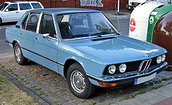

History of Mersedes
Mercedes-Benz traces its origins to Carl Benz's first internal combustion engine in a car, seen in the Benz Patent-Motorwagen – financed by Bertha Benz's dowry[10] and patented in January 1886[11] – and Gottlieb Daimler and their engineer Wilhelm Maybach's conversion of a stagecoach, with the addition of a petrol engine, introduced later that year. The Mercedes automobile was first marketed in 1901 by Daimler Motoren Gesellschaft (DMG). Emil Jellinek-Mercedes, an Austrian automobile entrepreneur who worked with DMG, registered the trademark in 1902, naming the 1901 Mercedes 35 hp after his daughter Mercedes Jellinek. Jellinek was a businessman and marketing strategist who promoted "horseless" Daimler automobiles among the highest circles of society. At the time, it was a meeting place for the haute volée of France and Europe, especially in winter. His customers included the Rothschild family and other wealthy clients, but as early as 1901, he was selling Mercedes cars in the "New World" as well, including to billionaires Rockefeller, Astor, Morgan, and Taylor. At the Nice race he attended in 1899, Jellinek drove under the pseudonym "Monsieur Mercédès". Many consider that race the birth of Mercedes-Benz as a brand. In 1901, the name "Mercedes" was re-registered by DMG worldwide as a protected trademark. The first Mercedes-Benz branded vehicles were produced in 1926, following the merger of Karl Benz and Gottlieb Daimler's companies into the Daimler-Benz company on 28 June of the same year.[11][12] Gottlieb Daimler (1834–1900) – founder of Daimler-Motoren-Gesellschaft Gottlieb Daimler was born on 17 March 1834 in Schorndorf. After training as a gunsmith and working in France, he attended the Polytechnic School in Stuttgart from 1857 to 1859. After completing various technical activities in France and England, he started working as a draftsman in Geislingen in 1862. At the end of 1863, he was appointed workshop inspector at a machine-tool factory in Reutlingen, where he met Wilhelm Maybach in 1865.[13] Throughout the 1930s, Mercedes-Benz produced the 770 model, a car that was notably popular throughout Germany's Nazi period. Adolf Hitler was known to have driven in a model of this car during his time in power, with modified custom bulletproof windshields.[14] However, most of the currently surviving 770 models were sold at auctions due to private buyers. One of the cars is currently on display at the War Museum in Ottawa, Ontario.[15] From 1937 onward, Daimler Benz focused increasingly on military products such as the LG3000 lorry and the DB600 and the DB601 aero engines. To build the latter, in 1936, it built a factory hidden in the forest at Genshagen around 10 km south of Berlin. By 1942, the company had mostly stopped producing cars, and was now devoted to war production. According to its own statement, in 1944, almost half of its 63,610 employees were forced labourers, prisoners of war, or concentration-camp detainees.[16] Another source quotes this figure at 46,000. The company later paid $12 million in reparations to the labourers' families